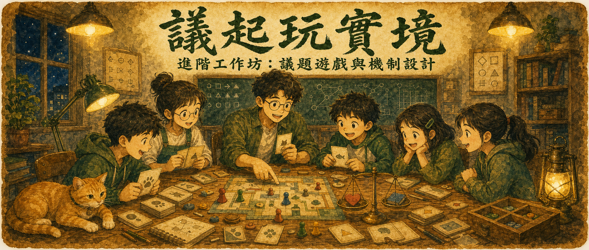
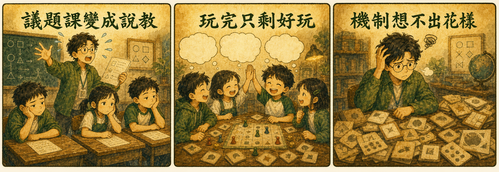
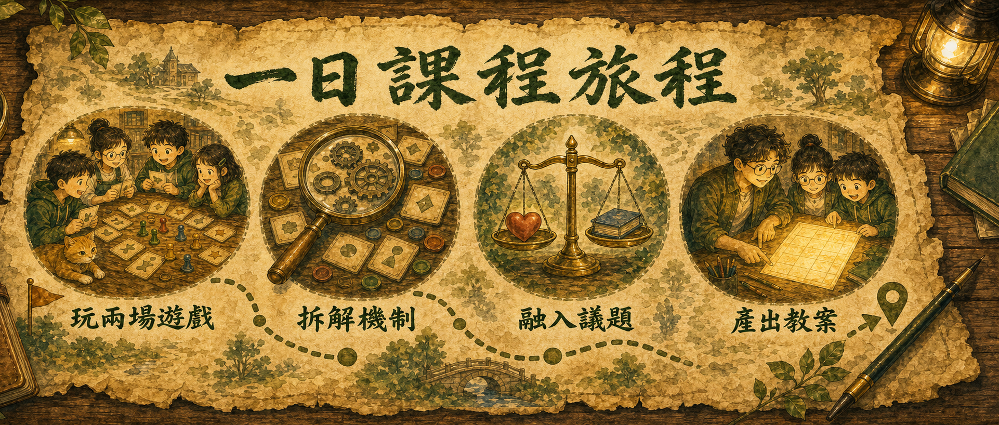
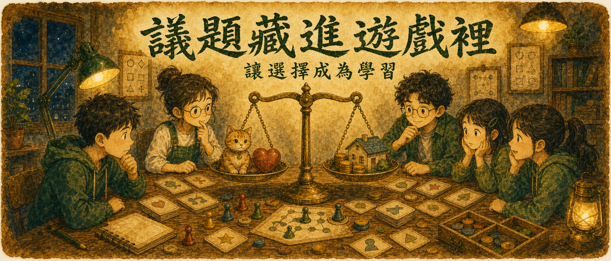

議題遊戲 × 機制變化 × 實作練習
議題不是用講的，是讓學生活進去
親玩兩場大型機制遊戲、拆解機制的三層結構，
學會把社會議題藏進遊戲——讓「做選擇」本身變成學習。
環保、動保、媒體識讀⋯⋯你講得語重心長，學生點頭如搗蒜——下課鐘一響，全部歸零。
活動熱熱鬧鬧收場，問學生「你學到什麼？」——一片沉默。遊戲和學習中間，好像斷了一條線。
跑關、答題、比快搶分都用到膩了。想設計讓人「陷入兩難」的玩法，卻不知道從哪裡變出來。

資源有限、立場衝突、每個選擇都有代價——
當學生在遊戲裡親手權衡過，議題就不再是課本上的一段話。
上午被機制推著走，下午換你設計機制推別人。

街貓 TNR 議題遊戲「喵生甚麼事」——在資源有限、居民抗議中照顧街貓；再加一場名畫真品贗品鑑定宴會。先感受機制張力，才知道好玩從哪來。
議題活動 → 故事事件 → 玩法挑戰。把剛剛玩過的遊戲一層層攤開：獲勝條件怎麼訂、資源怎麼管、張力怎麼堆——機制不是靈感，是結構。
角色扮演、趣味任務、前導影片——學會用情境三步驟包裝任何議題，環境、動保、霸凌預防、媒體識讀都能套，還送一包好用的數位小工具。
選定主題、收集資料、設定學習目標，套上模板把機制組進你的議題——帶著一份議題機制教案雛形離開教室。
以街貓 TNR 遊戲為例——玩家玩完自然就懂：什麼是 TNR、街貓造成什麼問題、我們能幫什麼忙。

角色扮演、前導影片，讓玩家「成為」議題裡的當事人，創造第一手經驗。
資源管理、立場衝突的機制設計，讓每個選擇都有代價——理解在權衡中發生。
用任務把玩家推向真實行動——募資、查證、實地探訪，遊戲結束學習才開始。